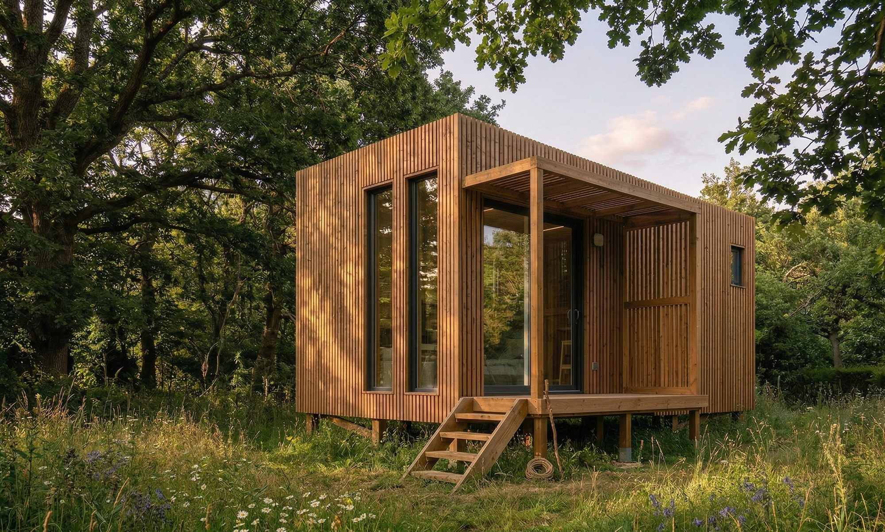

Un lodge dans vos vignes
Une proposition de partenariat œnotouristique aux vignerons du Val de Loire.
Vous êtes déjà engagés dans l'œnotourisme et souhaitez développer une offre d'hébergement ?
Le financement, la construction, l'exploitation et le risque sont portés intégralement par Lodges Nature & Vignoble. Vous n'investissez rien, vous ne gérez rien, et vous percevez un revenu.
- Zéro investissement Lodges financés, installés, assurés et entretenus de A à Z.
- Zéro gestion Réservations, ménage, linge, accueil, maintenance : tout est pris en charge.
- Un revenu complémentaire Redevance annuelle fixe et indexée, versée quel que soit le remplissage.
- Des visiteurs à la cave Les voyageurs viennent pour le domaine : flux qualifié, dégustations, ventes directes.
Deux lodges, près de votre chai

- Implantation
- À proximité du chai et de l'accueil de vente directe, sur une parcelle raccordable aux réseaux existants : eau, assainissement, électricité.
- Construction
- Lodge bois, construction légère aux normes RE2020. Posé sur pieux, sans dalle béton, entièrement réversible.
- Intérieur
- Environ 20 m² tout confort : coin cuisine, douche, lit confortable, chauffage. Pour 2 personnes, 4 saisons.
- Terrasse
- L'élément essentiel : le lien direct avec la nature, les vignes et la lumière.
- Parti pris
- Confort réel. Raccordement complet, pas de toilettes sèches, isolation et chauffage.
Le bail emphytéotique, un cadre sécurisé
- Durée
- 40 ans, acte authentique signé chez le notaire.
- Propriété
- Vous restez propriétaire de votre parcelle. Les lodges appartiennent à Lodges Nature & Vignoble, qui les finance, les assure et les entretient.
- Redevance
- Fixe et indexée annuellement, inscrite dans l'acte, versée quel que soit le remplissage.
- Fin de bail
- Défini dans l'acte, au cas par cas : démantèlement et remise en état, ou reprise des lodges par le domaine.
- Urbanisme
- Coportage du projet, dossier technique pris en charge.
De la rencontre à l'installation
Repérage
Repérage et certificat d'urbanisme opérationnel. Sans engagement de votre part.
Dossier d'urbanisme
Constitution technique prise en charge, convention d'engagement.
Bail chez le notaire
Acte authentique de 40 ans, puis installation des lodges.
L'implantation de lodges en zone agricole est-elle autorisée ?
L'urbanisme en zone agricole est un point déterminant. La faisabilité est étudiée au cas par cas selon le Plan Local d'Urbanisme. Des échanges avec la collectivité et la Chambre d'Agriculture permettent d'identifier les solutions possibles pour le projet.
« 40 ans, c'est long. »
C'est vrai. Mais cette durée est aussi la contrepartie du fait que vous n'avez aucun investissement à financer. Elle permet de rendre le projet finançable par la banque, tout en vous offrant un cadre clair et sécurisé sur la durée du bail.
« Et si vous arrêtez ? »
Le bail est souscrit au nom de la société d'exploitation. Le sort des lodges en fin de bail est écrit dans l'acte, à votre choix.
Vous proposez visites, dégustations et vente directe, et vous avez identifié une parcelle qui pourrait accueillir un lodge ?
06 78 81 76 55 · karine@lodgesnature.fr